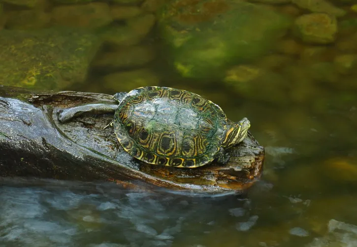

Bienvenidos al maravilloso mundo de los animales.

Los animales forman parte de nuestro planeta y podemos enconrarlos en diferentes lugares, como bosques, selvas, desiertos, océanos, montañas y ciudades. Cada especie tiene caracteristicas que le permiten adaptarse al lugar donde vive y encontrar alimento, agua y refugio.
Algunos animales son domesticos y viven cerca de las personas, mientras que otros viven en la naturaleza.Los perros y los gatos, por ejemplo, pueden formar parte de nuestras familias. En cambio, animales como los tigres, los elefantes y muchas especies de aves necesitan vivir en ambientes naturales donde pueden desarrollarse.
Los animales tambien cumplen con funciones importantes en los ecosistemas. Algunos ayudan a transportar semillas, otros participan en la polinizacion de las plantas y otros forman parte de las cadenas alimentarias. Por esta razón, cuidar a los animales tambien significa cuidar los lugares donde viven.
Proteger a los animales es resposabilidad de todos. Podemos ayudar evitando tirar basura en los espacios naturales, respetando a los animales y cuidando el agua, las plantas y los lugares donde diferentes especies encuentras alimento y refugio.
En esta pagina aprenderemos más sobre los animales y descubriremos algunas de las caracteristicas que los hacen especiales.
Los animales se pueden clasificar en diferentes grupos segun sus caracteristicas.
Los mamiferos son animales que tienen pelo y que amamantan a sus crias.
Las Aves tienen plumas y pueden volar.
Los reptiles tienen escamas y pueden vivir en la tierra o en el agua.
Cada especie tiene caracteristicas unicas que la hacen especial.